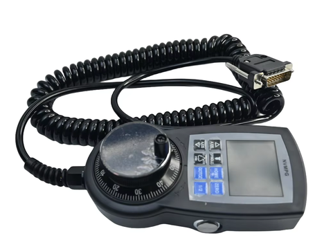

nvmpg-stm32f1

Digital Dream NVMPG CNC pendant
The NVMPG is a hand-held MPG (Manual Pulse Generator) pendant made by Digital Dream for its NVUM, NVEM, EC300 and EC500 CNC motion controllers. It has a handwheel, ten push buttons and a 2.0” color TFT display that shows the axis positions, the feed/spindle/jog overrides and the MPG step that the controller reports over a serial link.
Inside it there is an STM32F103RCT6 that drives the display, scans the keys and talks to the controller. The handwheel encoder and the E-stop are not connected to the MCU: they are wired straight through the cable to the controller.
This port replaces the original firmware. The dro configuration speaks the
same serial protocol, so the pendant keeps working with the controller.
Features
STM32F103RCT6: Cortex-M3, 256 KiB of FLASH and 48 KiB of SRAM
ILI9225 176x220 RGB565 TFT display on a 16-bit 8080 parallel bus, used in landscape mode (220x176)
10 push buttons
USART1 link to the CNC controller (115200 8N1)
SWD debug interface
Note
The display bus is driven by bit-banging GPIOs (GPIOB is the 16-bit data
bus), not through the FSMC, because the STM32F103RC in its 64-pin package
has no FSMC. The upstream drivers/lcd/ili9225.c driver only supports
SPI, so this board provides its own lcd_dev_s implementation in
src/stm32_ili9225.c.
Serial Protocol
The pendant is a slave of the controller. All the information on the display
comes from the controller, and the pendant only reports key events. For
instance, pressing the Step key sends 0x05; the controller then changes the
MPG step and reports the new value back, and only then the display changes.
Controller to pendant:
5A 5Afollowed by a 51-byte status frame (no checksum).5A 5B: identify request. The pendant answers01 13.
Status frame layout (little-endian):
Offset |
Type |
Meaning |
|---|---|---|
0x00 |
int32 |
X position, in 0.0001 units |
0x04 |
int32 |
Y position |
0x08 |
int32 |
Z position |
0x0C |
int32 |
A position |
0x10 |
int32 |
B position |
0x14 |
int32 |
C position |
0x19 |
uint8 |
RESET lamp: 0 = green, otherwise red |
0x1B |
int32 |
Value shown in the lower right box (5 digits) |
0x1F |
uint8 |
COMM lamp: 0 = off, otherwise yellow |
0x20 |
uint8 |
FRO, feed rate override (%) |
0x21 |
uint8 |
SJR, slow jog rate (%) |
0x22 |
uint8 |
SRO, spindle rate override (%) |
0x24 |
uint8 |
Selected override: 0 = none, 1 = FRO, 2 = SJR, 3 = SRO |
0x25 |
uint8 |
Selected axis: 0..5 = X..C. 0..2 shows the XYZ page and 3..5 the ABC page |
0x26 |
uint8 |
MPG step: 0 = x1, 1 = x10, 2 = x100, 3 = x1000 |
The fields at 0x19, 0x1B and 0x1F were identified from how the original firmware draws them; their exact meaning depends on the controller.
Pin Mapping
Pin |
Signal |
Notes |
|---|---|---|
PB0 |
LCD D0 |
PB0..PB15 are the 16-bit LCD data bus |
… |
… |
|
PB15 |
LCD D15 |
|
PC10 |
LCD /WR |
|
PC11 |
LCD RS |
0 = index register, 1 = data |
PC12 |
LCD /CS |
|
PA15 |
LCD /RD |
|
PA9 |
USART1 TX |
To the controller |
PA10 |
USART1 RX |
From the controller |
PA13 |
SWDIO |
|
PA14 |
SWCLK |
|
PA0 |
Key |
See Buttons and LEDs |
PA1 |
Key |
|
PA2 |
Key |
|
PA3 |
Key |
|
PC0 |
Key |
|
PC1 |
Key |
|
PC2 |
Key |
|
PC3 |
Key |
|
PC14 |
Key |
|
PC15 |
Key |
The LCD reset line is not connected to the MCU. PB3 and PB4 are only usable
as GPIOs with JTAG-DP disabled, so the board is configured with
CONFIG_STM32_JTAG_SW_ENABLE (SWD only).
Power Supply
The pendant is powered with 5 V by the controller through the MPG cable.
Clock
The original firmware clocks the PLL from HSI/2, so it is not known for sure which crystal is fitted to the board. By default the port does the same (HSI/2 x 16 = 64 MHz), which works whatever crystal is fitted.
CONFIG_NVMPG_STM32F1_HSE_8MHZ: clock the PLL from an 8 MHz HSE crystal instead, for a 72 MHz system clock.
Installation
The toolchain and build environment are the same as for the other STM32F1 boards; see Installing.
Building NuttX
$ ./tools/configure.sh nvmpg-stm32f1:dro
$ make
Flashing
The board is programmed through SWD (PA13/PA14) with an ST-Link probe and OpenOCD:
$ openocd -f interface/stlink.cfg -f target/stm32f1x.cfg \
-c "program nuttx.bin 0x08000000 verify reset; shutdown"
ST-Link clones with old firmware (older than V2J24) only work with the
interface/stlink-hla.cfg interface script.
Warning
Back up the original firmware before flashing NuttX, for instance with
dump_image nvmpg-original.bin 0x08000000 0x40000 from OpenOCD, if you
want to be able to restore it later.
The board configuration sets DBGMCU_CR.DBG_SLEEP at boot, so the debugger
can attach to the running firmware even while the CPU is sleeping in the idle
loop.
Configurations
$ ./tools/configure.sh nvmpg-stm32f1:<config-name>
dro
Replacement firmware for the pendant. It starts the
nvmpg-dro application
directly (CONFIG_INIT_ENTRYPOINT="nvmpg_dro_main"). There is no NSH
console: USART1 is used for the link to the controller (/dev/ttyS0).
At power up the NuttX logo is shown for one second, then the DRO screen: the axis positions, the FRO/SJR/SRO overrides, the MPG step, and the RESET and COMM lamps. The positions are drawn in grey when no frame was received from the controller for one second.